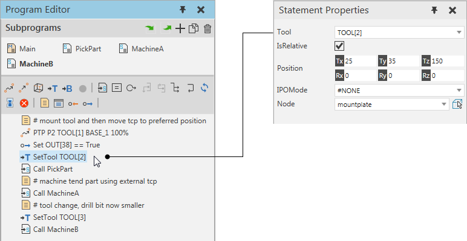

A Define Tool statement changes the properties of a tool frame in robot during a simulation. When you reset a simulation, the tool frame returns to its initial position.

Note: A tool frame can be used as a tool center point (tcp) for motion statements. Moving a tool frame would alter the position of robot at the endpoint of motion statements. Generally, a Define Tool statement is used in robot programs involving mounted tool changes, welding, machine tending, and external configurations with static tool center points.
| Name | Description |
| Tool | Defines the tool frame of robot controller altered by statement.
Note: You cannot use a Define Tool statement to alter a tool frame in a different robot. |
| IsRelative | Defines if Position is based in tool frame coordinate system or its parent coordinate system.
True uses tool frame coordinate system, so frame will be moved relative to its location at the time of statement execution. False uses the parent coordinate system of tool frame defined in Node, so frame will be moved to an absolute location. |
| Position |
Defines the position and orientation of Tool. |
| IPOMode | Defines the interpolation mode of the frame and the external configuration of a referencing robot controller.
#NONE has no effect and is the default setting. #BASE sets the tool frame to act as a base coordinate system. #TCP sets the tool frame to act as a tool center point. Note: A conflict can occur if a base-tool pair in a referencing robot have the same IPOMode property value or cannot be used with the current configuration of robot. |
| Node | Defines the node the tool frame is attached to in 3D world. |